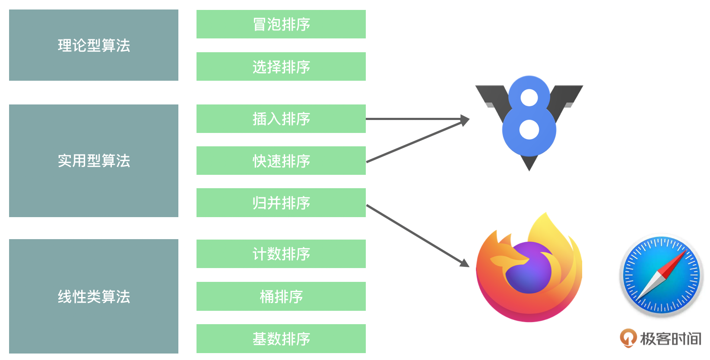
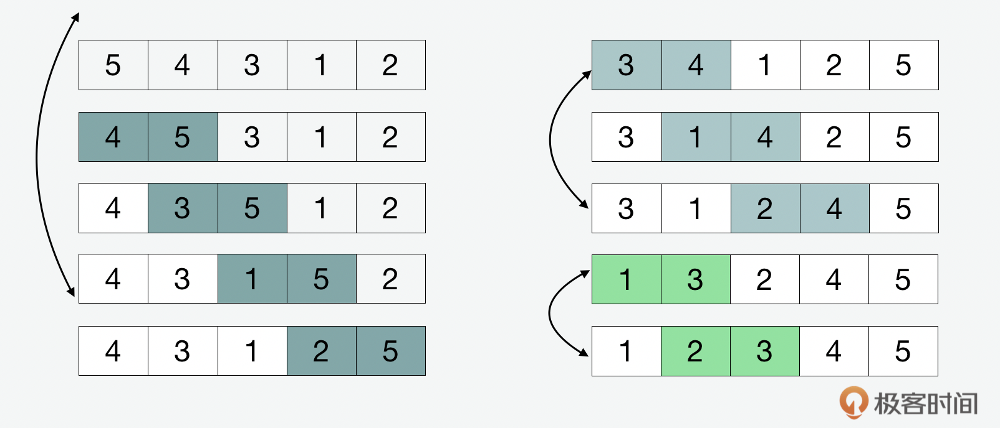
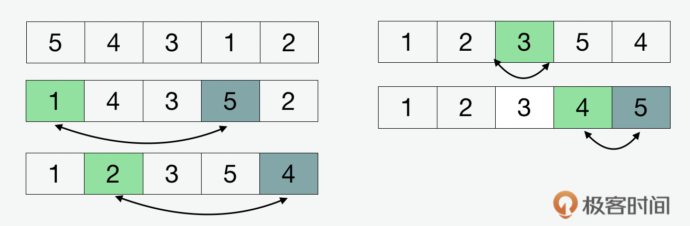
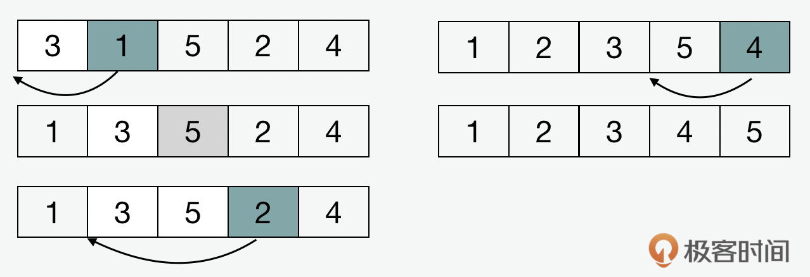
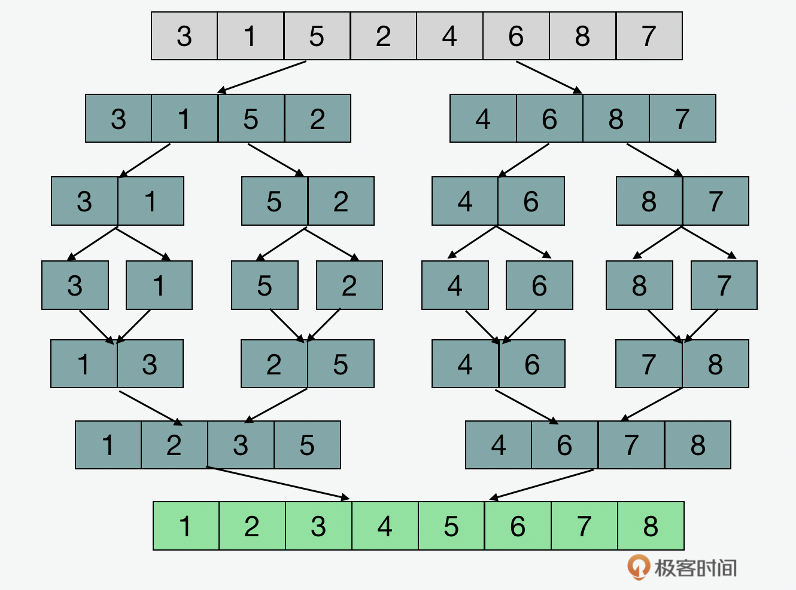
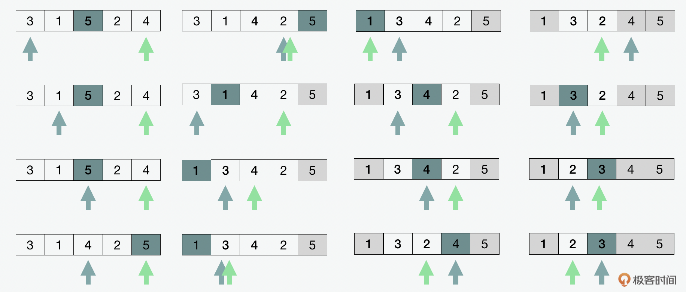

- 00 开篇词 JavaScript的进阶之路.md.html
- 01 函数式vs.面向对象：响应未知和不确定.md.html
- 02 如何通过闭包对象管理程序中状态的变化？.md.html
- 03 如何通过部分应用和柯里化让函数具象化？.md.html
- 04 如何通过组合、管道和reducer让函数抽象化？.md.html
- 05 map、reduce和monad如何围绕值进行操作？.md.html
- 06 如何通过模块化、异步和观察做到动态加载？.md.html
- 07 深入理解对象的私有和静态属性.md.html
- 08 深入理解继承、Delegation和组合.md.html
- 09 面向对象：通过词法作用域和调用点理解this绑定.md.html
- 10 JS有哪8种数据类型，你需要注意什么？.md.html
- 11 通过JS引擎的堆栈了解闭包原理.md.html
- 12 JS语义分析该用迭代还是递归？.md.html
- 13 JS引擎如何实现数组的稳定排序？.md.html
- 14 通过SparkPlug深入了解调用栈.md.html
- 15 如何通过哈希查找JS对象内存地址？.md.html
- 16 为什么环形队列适合做Node数据流缓存？.md.html
- 17 如何通过链表做LRU_LFU缓存？.md.html
- 18 TurboFan如何用图做JS编译优化？.md.html
- 19 通过树和图看如何在无序中找到路径和秩序.md.html
- 20 算法思想：JS中分治、贪心、回溯和动态规划.md.html
- 21 创建型：为什么说Redux可以替代单例状态管理.md.html
- 22 结构型：Vue.js如何通过代理实现响应式编程.md.html
- 23 结构型：通过jQuery看结构型模式.md.html
- 24 行为型：通过观察者、迭代器模式看JS异步回调.md.html
- 25 行为型：模版、策略和状态模式有什么区别？.md.html
- 26 特殊型：前端有哪些处理加载和渲染的特殊“模式”？.md.html
- 27 性能：如何理解JavaScript中的并行、并发？（上）.md.html
- 28 性能：如何理解JavaScript中的并行、并发？（下）.md.html
- 29 性能：通过Orinoco、Jank Busters看垃圾回收.md.html
- 30 网络：从HTTP_1到HTTP_3，你都需要了解什么？.md.html
- 31 安全：JS代码和程序都需要注意哪些安全问题？.md.html
- 32 测试（一）：开发到重构中的测试.md.html
- 33 测试（二）：功能性测试.md.html
- 34 测试（三）：非功能性测试.md.html
- 35 静态类型检查：ESLint语法规则和代码风格的检查.md.html
- 36 Flow：通过Flow类看JS的类型检查.md.html
- 37 包管理和分发：通过NPM做包的管理和分发.md.html
- 38 编译和打包：通过Webpack、Babel做编译和打包.md.html
- 39 语法扩展：通过JSX来做语法扩展.md.html
- 40 Polyfill：通过Polyfill让浏览器提供原生支持.md.html
- 41 微前端：从MVC贫血模式到DDD充血模式.md.html
- 42 大前端：通过一云多端搭建跨PC_移动的平台应用.md.html
- 43 元编程：通过Proxies和Reflect赋能元编程.md.html
- 结束语 JavaScript的未来之路：源于一个以终为始的初心.md.html
- 捐赠
13 JS引擎如何实现数组的稳定排序？
你好，我是石川。
我们经常将数据结构和算法这两个词连起来说，可是你有没有想过，这两者是什么关系？
可以说数据结构是服务于算法的。这么说比较概括。下面我们就找一个切入点来讲解两者的关系，我们先从排序算法说起。提到排序，我们就要说到常用的数据结构数组，比如在JS中我们一般都用过它的排序方法，可是你知不知道排序方法背后用的是哪种算法呢？这一讲，就通过数组了解排序算法，再来看JS 引擎是如何实现数组的排序的。
在数据结构中，我们大体可以分为两类。第一类是线性表，第二类是非线性表。这里的线性和我们生活中理解的线性没有本质上的区别，意思就是“按顺序的”。数组可以说是一种连续存储的线性表，并且可以算是一种比较基础的线性数据结构了。通过数组，我们可以实现比如之前说过的栈、队列等线性结构。你也可以用它来创建非常经典的非线性结构，比如堆和图。
除了数组以外，另外一种既基础又经典的数据结构就是对象了。对象的一个特点是含有属性，很多时候可以用来作为节点（node），通过节点相连的方式，就可以创建链式结构，比如链表；对象的另外一个特点是它支持键值对（key-value pair），通过这个特点可以用来实现散列表和字典。
回到今天的话题，我们来重点说说数组。
数组的优劣势是什么
数组作为一种线性数据结构最大的特点是连续性，带来的优势是可随机访问性，但是它的劣势是高效的插入和删除。几乎所有的语言都把数组当做一种内置的数据类型提供，在这一点上，JavaScript也不例外。作为JavaScript数据类型之一，我们在前面介绍过数组。但是作为数据结构，我们可以从另一个角度来理解它。
我们前面说，数组的劣势是插入和删除，这是什么意思呢？我们假设在排队的时候，有人插队，那么整个组的人都会往后移动。这个时候，时间复杂度为\(O(n)\)。
那么使用数组的时候如何尽量克服这个劣势问题呢？和排队一样，方法就是按规矩让这个人排到队尾。在数组中，如果把数据元素插到队尾的话，那么整个时间复杂度仅仅为\(O(1)\)。所以通常，如果我们不在乎增加一个新的数据到哪儿，那么最好就是把它加到队尾。在JavaScript中，如何将一条信息加到数组的队尾呢？我们知道数组也是一种对象，那么它也有着一些自带的属性和方法用来对数组进行操作。在JavaScript当中，实现插入最简单的方式就是在数组的长度基础上算出下一个空位，赋值为我们想加入的数据元素。
var week = [1,2,3,4,5,6];
week[week.length] = 7;
console.log(week) // 返回 [1,2,3,4,5,6,7]
在这里，你可以看到它和C或者Java相同和不同的影子。和C或者Java相同的是，我们的直觉会告诉我们开始数组长度是6，那在第6个位置上赋值，怎么会是空位，这样不会覆盖到第6个数字吗？不会。这是因为数组通常是从0而不是1开始计算的。和C或者Java不同的是，在JavaScript里，数组的长度是可以动态扩容的，或者用我们之前讲的函数式思想来看，内容也是可变的，这点从上面的例子就可以看出。而在C和Java里，数组的长度是一开始就决定的，如果这时候增加一个新的数据元素，就需要创建一个新的数组。
除了上面的方法，还有另外一种方法可以快速地增加一个值到数组的尾部，这种方式就是使用JavaScript中数组自带的push方法。从这里，我们大概可以看出队列和栈的影子。当我们用上面排队举例子时，其实就有队列的概念。下面的push在英文里，其实就是“压栈”的意思。
var week = [1,2,3,4,5,6];
week.push(7);
console.log(week) // 返回 [1,2,3,4,5,6,7]
JS如何实现数组的排序
说完了数组的优劣势，我们来看看它的排序实现。数组是如何实现排序的呢，通过下面的例子，我们可以来看看几种排序方式。其中前2种冒泡和选择排序是偏理论型的排序方式，后面3种，插入、快排和归并属于应用型的算法。Chrome用的V8引擎就是快排和插入排序的结合，火狐用的SpiderMonkey则是基于归并来实现排序的。为什么浏览器会使用这几种排序方式呢？我们可以通过它们的原理和特点来了解。

理论类排序法
首先，我们先来看看理论类的冒泡、选择这两种排序算法。这两种方式用的都是一种比较和交换的方法（compare and swap）。我们上面说过，对于数组来说，如果我们在非队尾的位置插入的话，就容易造成队列中插入的元素以后的一系列元素的移动。但是如果使用交换的方式，就巧妙地避免了这个问题。
冒泡排序（bubble sort）的核心思想就是通过比较两个相邻的数据元素，如果前面的大于后面的，就交换它们的位置。

选择排序（selection sort）用的是一种原地比较的算法（in-place compare），它的核心思想就是找到最小的数据元素，把它放到第一位，然后再从剩下的数组中找到最小的数据元素，然后放到第二位，以此类推。

之所以说这两类排序算法更多是理论层面，是因为它们的时间复杂度都是\(O(n^{2})\)。下面我们来看看有没有时间复杂度更低的方式来处理数组的排序。
常用类排序法
下面我们再来看看一些非理论类，实际使用中常用的排序算法。
插入排序（insertion sort）和之前的冒泡和选择排序法不同，它不是用比较和交换，而是通过位移来做插入。它假设数组中第1个元素已经排序了。从第2个和第1个比较，如果小于第1个值，就插入到前面，如果大于，就原地不动；第3个值同理和前面的2个比较，小于就左移插入，大于就不动；后面的操作都以此类推。虽然插入排序虽然从复杂度上来看，和冒泡及选择算法类似，都是\(O(n^{2})\)，但是实际上，对于一些较短的数组来说，它的性能是明显更好的。

归并排序（merge sort）可以算是比较常见的应用型排序算法了，它的复杂度是\(O(n log n)\)。下面，我们就来看看它的实现。归并算法用到的是我们前面介绍过的递归和分治的算法思想。这种方法的核心就是先把一个大的数组拆分成只包含一个元素的不可再分的数组，然后两两比较，最后再合并成一个数组。

下面，我们再来看看快排算法（quick sort），和归并类似，快排也用到了递归和分治，同样，它的时间复杂度是\(O(n log n)\)。说它也用了分治，是因为快排也会对数组“分开来”分析；但是和归并不同的是，它不会把元素真的“拆出来”再组合。那么它是怎么实现排序的呢？
在快排中，用到的是区分点（pivot）和指针（pointer）。在数组中，我们会在最前和最后一个元素的位置各加一个指针，然后在中间的位置加一个区分点。我们会不断移动左指针，直到我们找到一个元素大于区分点；同时，我们也会不断移动右指针，直到我们找到一个小于区分点的数，然后将它和左指针指向的数据交换。这里类似我们在冒泡排序中提到的比较和交换的算法。这个过程可以使得所有区分点左边的值都小于右边的数，这个过程叫做分区（partition）。这个方式会按照递归的方式不断重复，直到最后整个数组排序完成。

关于快排有一点需要注意，就是分区的实现。关于分区实现中的区分点，我们需要注意的是为了避免分区后两个区域的数据量相差很大，我们可以默认在两个指针之间选一个平均值，但更好的办法是通过随机的方式来选择，虽然这样不能保证最好的结果，但从概率角度，也不会太差。
排序的稳定性问题
前面我们说了那么多，那么回到我们之前的问题，为什么V8用的是插入加快排的方式，SpiderMonkey用的是归并的方式来做排序呢？这就要从排序的稳定性说起了。在ECAMScript的官方文档中，虽然并不指定JS引擎对sort的具体实现方式，但是有一条准则，就是要确保数组的排序必须是稳定排序（stable sort）。
从理论上讲，虽然归并和快排的复杂度都是相同的，但是前面我们忽略了两个重要因素，第一个是时间复杂度的平均和极端情况，第二个是空间复杂度的问题。快排在平均情况下的空间复杂度是\(O(n log n)\)，但是在极端情况下是\(O(n^{2})\)。
那你会说，这样为什么不直接用归并排序，因为归并排序也不是没有问题，在使用归并排序的时候，虽然它是稳定的，但它不是原地排序法，这就造成了它的空间复杂度是\(O(n)\)，必然要高于其它的算法类型。所以这就是为什么V8和SpiderMonkey各自选择不同算法的原因。对于V8而言，为了既解决稳定性问题，又解决复杂度问题，就使用了快排加插入的方式，在数据量比较小的情况下，使用插入；在数据量比较大的时候，则切换到快排。而对于SpiderMonkey来说，就通过归并来满足稳定性的需求。
延伸：线性类排序法
还有一类的排序法我们称之为线性排序法，为什么这么叫呢。因为他们使用的都是非比较类的排序方法，这里包括了计数、桶和基数排序，因为这几种排序算法都是用于特殊场景，我们就不在这里讲它们的具体实现了，但是我也会把源码放到GitHub上。如果你想做延伸了解，可以通过代码注释来了解。
总结
今天我们通过数组这种最简单的数据结构了解了并不简单的排序算法。你应该学到了数组这种数据结构的优劣性，同时我们也看到了V8和SpiderMoney使用的排序方式。这一讲最核心的并不是我们学到了这些逻辑和应用，更重要的是我们看到了全面分析的思维方式。比如我们看到的时间复杂度只是一个方面，它不能直接代替性能。当我们把它和稳定性及空间复杂度的思考维度相加的时候，才能对解决方案作出更全面和客观的判断。同时，这也告诉我们我们所写的程序基于不同的引擎和数据量可能会有不同的结果。
思考题
今天留给你的思考题是，通过今天学到的知识，你能不能讲讲你知道的其它的JS引擎用的是什么算法？
期待在留言区看到你的分享，我们一起交流讨论。另外，也欢迎你把今天的内容分享给更多的朋友。我们下期再见！
© 2019 - 2023 Liangliang Lee. Powered by gin and hexo-theme-book.